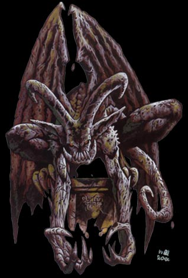
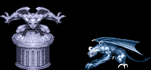

| 고블린 | | | 놀 | | | 코볼트 | | | 아울베어 |
| 스켈레톤 | | | 구울 | | | 자이언트 스콜피온 | | | 자이언트 비틀 |
| 트로글로다이트 | | | 헬 하운드 | | | 셰도우 엘프 | | | 가고일 |
Gargoyle
|  | 이 생물은 괴기한 모습의 뿔달린 머리에 돌같은 피부를
가진 날개달린 인간과 비슷한 모습을 하고 있다. 룰 상에서의 묘사 가고일은 자신보다 약한 자를 괴롭히는 것을 즐기는 고약한 날아다니는 약탈자이다. 가고일은 종종 적들을 놀래키기 위해 날개달린 석상으로 위장하기도 한다. 이들은 물,음식,공기를 섭취할 필요가 없지만 쓰러진 적에게 고통을 안겨주기 위해 일부러 먹어치우기도 한다. 이들이 좋아하는 놀이를 즐기지 않는 시간에는 먹이를 잡기 위해 날개를 조용히 접고 있는 것을 볼 수 있다. 가고일은 공용어와 테란(Terran)어를 사용한다. (이들이 선호하는 클래스는 파이터라고 한다.) ※ 3.5버전의 룰에선 10의 데미지를 감소시키는 능력이 있지만 물리공격에 대해 무적은 아니다. |
| 평균 HP | 80 | ||||||||||||||||||||||||
| 격파시 획득 XP | 2000 | ||||||||||||||||||||||||
| 등장 스테이지 | 스테이지 6 / 스테이지 10-2 / 스테이지 10-3(4인 플레이 일 경우) / 스테이지 10-4 | ||||||||||||||||||||||||
| 드랍 가능한 아이템 | 돈 : 5sp x 3 ~ 100sp x 1 + 5sp x 3 (15~115sp)
★ - 사용가능한 클래스가 있을 경우 드랍 가능 드랍 가능한 스크롤의 최고 레벨(스테이지/레벨) 6/6 - 9-B/8 - 10-2~10-5/8 |
||||||||||||||||||||||||
| ※ 드랍 되는 아이템은 | '돈 + 점수 아이템 1점 + 그외 아이템 1점'으로 구성된다(물론 드랍 되지 않을 확률도 있다.) | ||||||||||||||||||||||||
| 스틸 가능한 아이템 |
|
||||||||||||||||||||||||
|  석상으로 위장하고 있다가 플레이어가 다가가면 본래 모습을 드러낸다. |
SOM에 나오는 몬스터 중 가장 고위층 이라고 할 수 있다. 점수도 가장 높으며 또한 상당히 다양한 종류의 아이템을 준다. 특히 일반 몬스터중에서 유일하게 다이아몬드를 주기 때문에 스코어 어택이라면 놓칠 수 없는 몬스터이다. 그러나 일반 물리공격에 대해서는 완전히 무적이며 피해를 주려면 은제 무기나 주문, 혹은 일명 속성검으로 공격을 해야 한다. |
등장 방식
석상의 모습으로 위장을 하고 있다가 플레이어가 위/아래로 접근했을 경우 받침대를 부수고 기습을 한다.
만약 석상의 범위 만큼 점프를 해서 넘어간다면 가고일은 반응하지 않는다.
움직임의 패턴
플레이어 캐릭터의 주위를 맴돌다가 틈이 보이면 공격을 해 온다. 날개가 있어서 비행이 가능하다는 점을 명심하자.
걸어다닐 때에는 속도가 느리기 때문에 공격수단만 있다면 제압하기는 어렵지 않다.
공격 패턴
| 공격 형태 | 근접 공격 1 | 근접 공격 2 | 서머솔트 킥, 슬라이딩 | 점프 공격 | 물기 |
| 평균 데미지 | 12 / 15 | 14 / 21 | 15 / 27 | 15 / 30 | 22 / 22 |
※ 가고일의 경우 중후반부 부터 등장해서 인지 스테이지 별 데미지 차이가 없다.
※ 붉은색은 파이터가 입는 데미지, 푸른색은 매직 유저가 입는 데미지.
클레릭/드워프는 파이터에 가까운 데미지를, 시프/엘프는 매직 유저에 가까운 데미지를 입는다.
| 근접 공격 1 긴 손톱으로 플레이어를 할퀸다(갑자기 손톱이 길어진다). 왼손, 혹은 오른손으로 휘두르는데 별 차이는 없다. 공속이 빠르기 때문에 공격수단이 없다면 접근하지 말자. |
|
| 근접 공격 2 양손으로 할퀸다. 속도는 약간 느리나 데미지가 좀 더 크다. |
|
| 서머 솔트 킥(?) 플레이어 캐릭터를 차낸 다음 뒤로 덤블링을 한다. 이 공격에 맞은 플레이어 캐릭터는 넘어진다. |
|
| 슬라이딩 손톱을 앞세워서 슬라이딩을 하는데 타점이 아주 낮다. 따라서 방어가 불가능하며 공속도 빠른 편 이라 피하기도 쉽 지 않다. 또한 가드 후 카운터어택으로 날아오기도 한다. 가고일의 공격 중에서 가장 주의해야 할 공격이다. |
|
| 물기 석상 상태에서 기습(?) 할 때 시도하는 공격이다. (돌아다는 중에도 가끔 시도하기도 한다.) 위치를 정확히 노리고 날아오지만 일단 급강하 하기 시작하 면 궤도 수정이 안되기 때문에 그 때를 노려서 위치에 따라 적절히 피해야 한다. 속성검, 혹은 전설의 검이 있다면 점프 찍기 공격으로 커트 할 수 있다. |
|
| 점프 공격 살짝 뛴 다음 양 손톱으로 위에서 아래로 긁는 공격이다. 높이에 비해 체공시간이 길어서 느린 편이지만 판정이 좋으 니 무리하게 맞서지 말자. |
|
참고사항
불꽃의 검, 서리의 검, 폭풍의 검, 전설의 검, 그리고 은화살, 은단검과 주문으로만 피해를 줄 수 있다.
혹은 철상자를 던져서 맞춰서 피해를 주는 것도 가능하다. 또한 내려찍는 트랩에 찍혔을 경우 데미지를 입는다.
일반 무기로 공격을 하면 HP가 약간 줄어든 것 처럼 보이나 실제로 줄어드는 것이 아니다.
드워프와 시프의 은단검 투척을 제외하면 은단검과 은화살은 가고일이 점프를 하는 도중에 타이밍을 맞춰서 던져야
피해를 줄 수 있다.
대처법/주의점
데미지를 줄 수 있는 무기나 도구, 주문이 없다면 괜히 건들지 말고 도망가는게 좋다.
만약에 가고일이 가드를 했다 싶으면 위아래로 신속히 피하는게 좋다. 뒤이어 들어오는 슬라이딩이 무섭기 때문이다.
이녀석들을 잡고 싶다면 파이터, 시프, 드워프는 속성검을 한자루 가지고 있는게 좋다.
엘프는 속성검을 쓸 수도 있지만 매직 미사일이 있기 때문에 굳이 가지고 있을 필요는 없다.
스테이지 경계선이 굴곡이 있는 지역으로 잘 유인하면 경계선에 걸려서 가고일들이 겹치면서 제자리 걸음을 한다.
이 때 매직 미사일을 사용하면 동시 타격이 가능하다.
클레릭은 홀리 워드나 어스 퀘이크로 잡으면 된다. 다만 시전 가능 횟수가 적으니 몰아서 잡도록 하자.
클레릭으로 상자를 열면 파이어 볼 반지가 잘 나오는 편인데 이걸 모아서 가고일 잡는데 쓰는 것도 좋다.